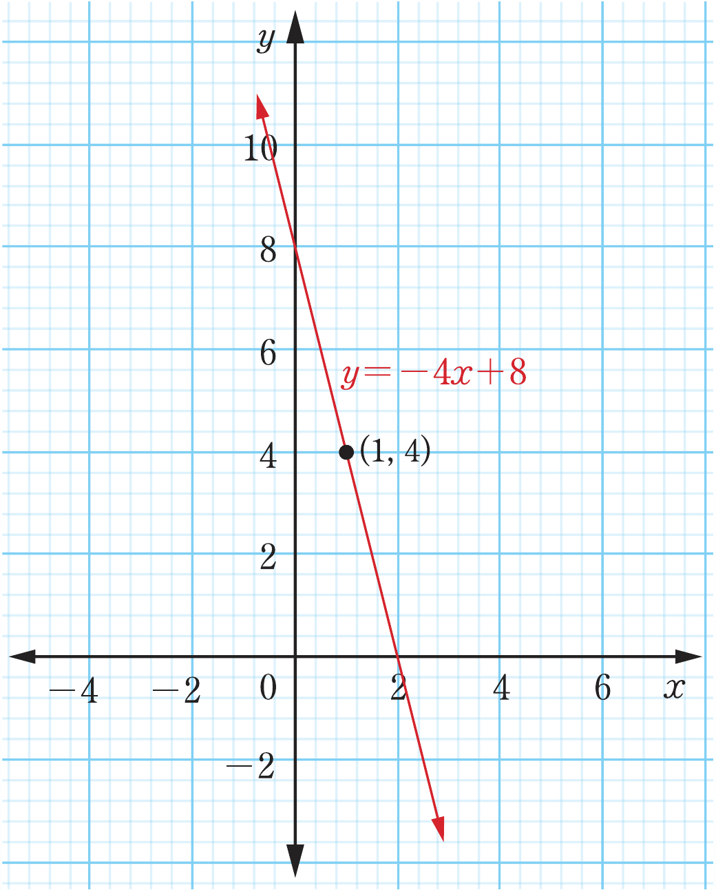
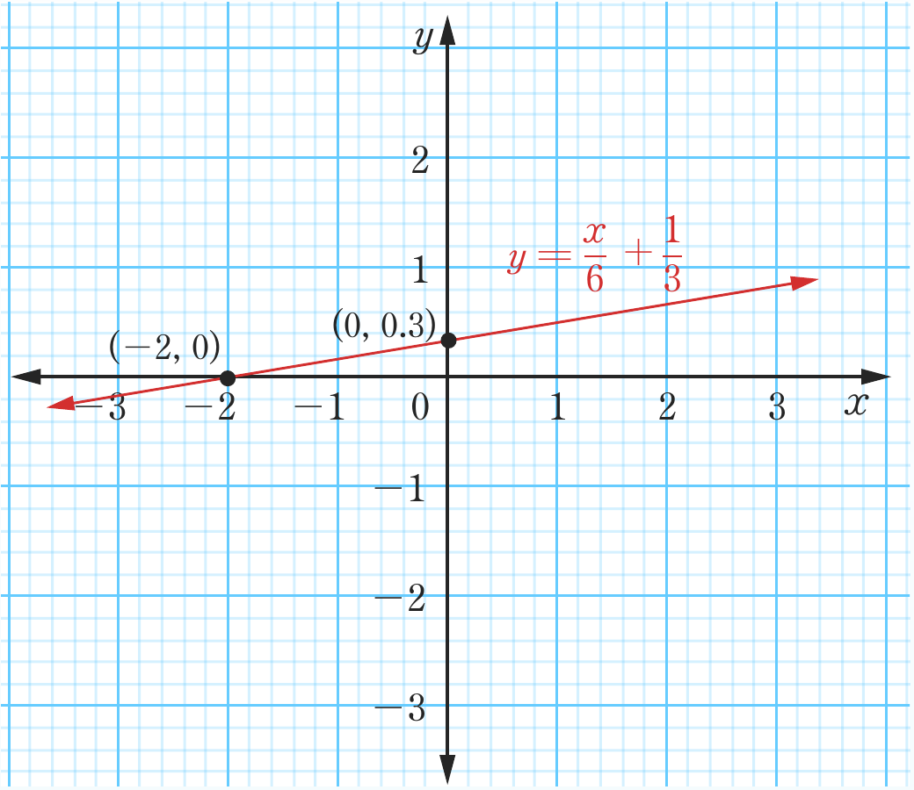

(c)

(d)

Coordinate graph of the line y = -4x + 8 sloping downward from left to right, with the point (1, 4) marked on the line.Coordinate graph of the line y = x/6 + 1/3 sloping upward from left to right, with points (-2, 0) and (0, 0.3) marked on the line.